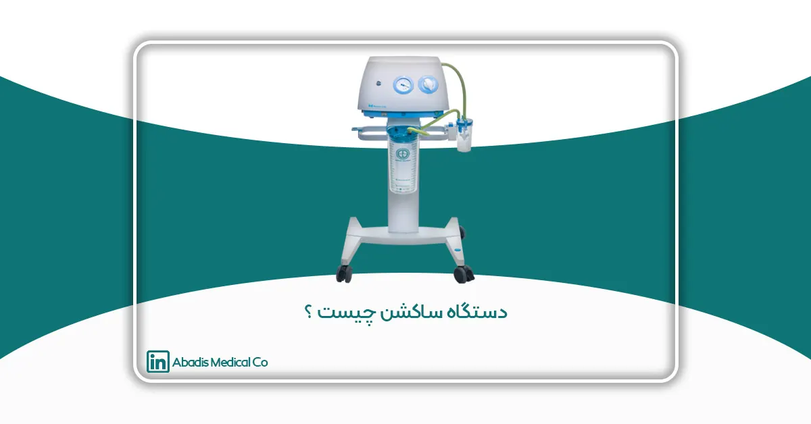
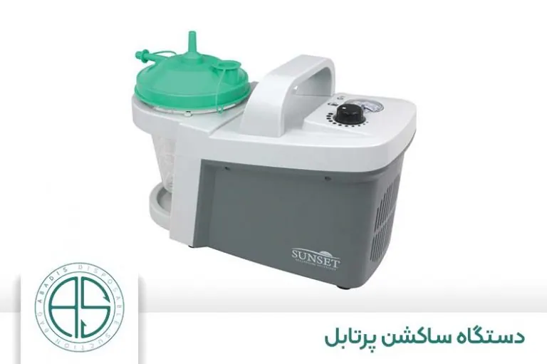
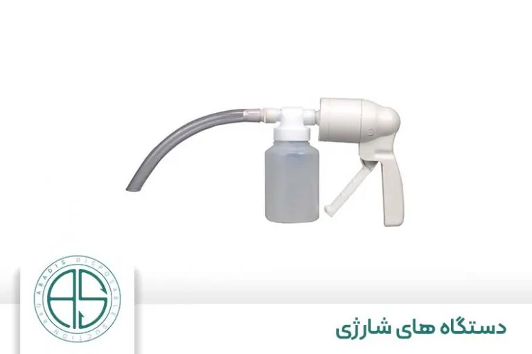
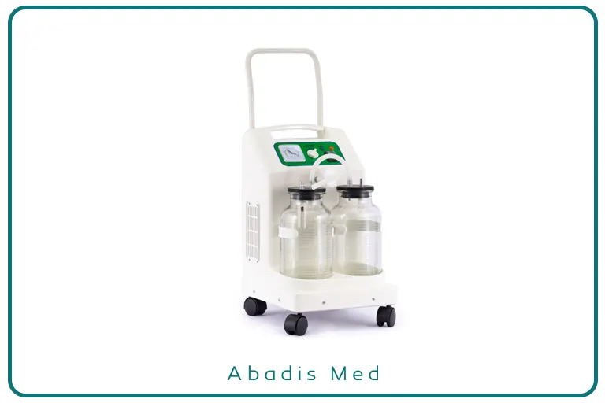
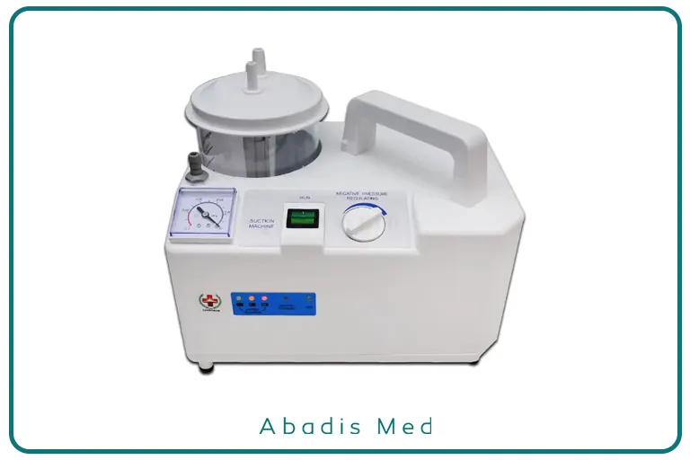
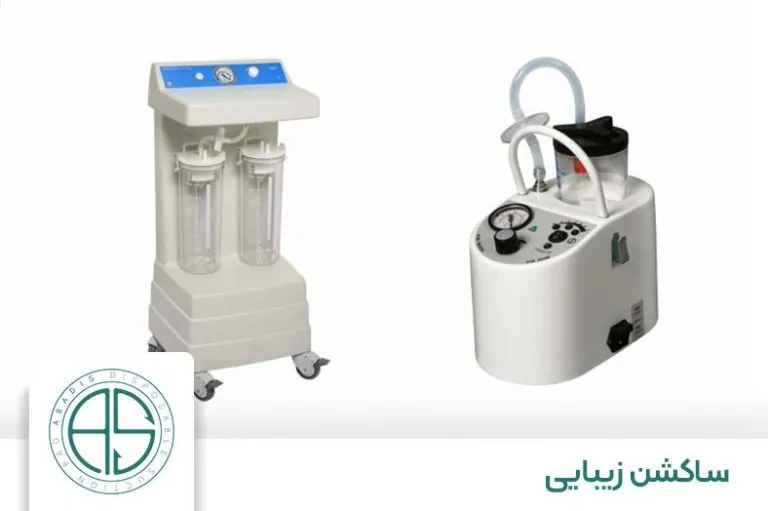

امروزه تکنولوژی در صنعت پزشکی نیز قدم گذاشته و دستگاهها و تجهیزات بینظیری را برای دنیای پزشکی به ارمغان آورده است. یکی از این تجهیزات که تحولی در دنیای پزشکی محسوب میشود، دستگاه ساکشن است.
تجهیزات و دستگاههای پزشکی برای پزشکان مسیری هموار برای کمک به بیماران ایجاد میکنند که بتوانند راحتتر به کسانی که نیاز به کمک پزشکی دارند، خدماترسانی را انجام دهند.
تاکنون در فیلمها یا در واقعیت، کلمه ساکشن به گوشتان خورده است؟ مخصوصاً در فیلمهای پزشکی در اتاق عمل که با هیجان میگویند «ساکشن!». در ذهنمان میگوییم ساکشن چیست؟! چه کاربردی دارد که اینقدر در فیلمها با هیجان این کلمه را بیان میکنند؟
در این مقاله قصد داریم که شما را به دنیای تجهیزات و دستگاههای پزشکی دعوت کنیم و با فناوری ساکشن که یکی از مهمترین تجهیزات اتاق عمل محسوب میشود، آشنا سازیم. ساکشن کاربردهای بیشتری از اتاق عمل دارد که قرار است همه آنها بررسی شوند، بنابراین با ما همراه باشید.
نگاهی به تاریخچه دستگاه ساکشن
نسل اولیه یا بهتر است بگوییم اولین مدل از دستگاه ساکشن در سال ۱۹۰۷ توسط Yankauer اختراع شد که دستگاههای امروزی شباهت بسیار کمتری با نسخه اولیه آن دارند. البته اولین بار TIP (لوله) ساکشن در قرن 1800 در بیمارستان سینای شهر نیویورک برای بیماران سرپایی مورد استفاده قرار گرفت.
وی بسیاری از دستگاههای پزشکی را اختراع کرده بود که تأثیر مثبتی بر این حرفه تا به امروز گذاشته است. اما شهرت او بیشتر به خاطر ساخت نوک کاتتر ساکشن سفت و سختش، یانکاور بود. این وسیله در ابتدا برای کمک به پاکسازی نواحی جراحی حین برداشتن لوزه طراحی شده بود.
اما استفاده از این دستگاه (کاتتر) گسترش یافته و امروزه شامل بسیاری از روشهای جراحی و همچنین ساکشن اوروفارنکس داخل بیمارستانی و پیش بیمارستانی (آمبولانسی) شده است.
|
آشنایی بیشتر با کاتتر: کاتتر Yankauer از پلاستیک یا فولاد ضد زنگ (استیل) ساخته شده است! سوراخهای کوچکی در نوک پیازی شکل آن برای جمعآوری مایع طراحی شده است که میزان وارد کردن آسیب بافتها به حداقل برسد. فرم کاتتر منحنی است، به همین دلیل قابلیت مانور بیشتر به کادر فنی میدهد. |
دستگاه ساکشن چیست؟
دستگاه های ساکشن نامهای متفاوتی دارند که میتوان از نام پمپ وکیوم یاد کرد. ساکشن یکی از پرکاربردترین تجهیزات پزشکی است که میتواند در مرکز درمانی یا حتی منزل مورد استفاده قرار گیرد.
در واقع این دستگاه همانطور از اسمش مشخص است، فرایند مکش را به خوبی انجام میدهد. تصور کنید در اتاق عمل، پزشک در حال جراحی است، با هر برشی که ایجاد میکند، خون فراوانی آن ناحیه را در برمیگیرد و محلی که جراح میخواهد مورد بررسی و جراحی قرار دهد، اکنون دیگر غرق در خون شده است.
از این رو باید دستگاهی باشد که این خونها را جمعآوری کند و محیطی که جراح میخواهد مورد بررسی و جراحی قرار دهد را پاک و عاری از خون کند. حال این کار را چگونه انجام میدهد؟ این دستگاه با استفاده از پمپی حالت مکش و فشار منفی را ایجاد میکند.
گاهی وقتها پزشک برای بیمارانی که از مشکلات تنفسی رنج میبرند، این دستگاه را پیشنهاد میدهد. این فشار منفی ترشحهای مایع، خون و خونابه را جمعآوری کرده و از طریق لولهای آن را از بدن خارج میکند. شما حتی ردپای دستگاه ساکشن را در کلینیک دندانپزشکی هم خواهید دید.
ساکشنها به کمک باتری و برق شهری کار میکنند و خدمات نفیسی را به ارمغان میآورند. شما میتوانید مناسب با شرایط و نیاز بیمار، فشار موجود در ساکشن را تنظیم کنید. دستگاههای ساکشن به راحتی قابل حمل هستند و شما میتوانید آنها را روی میز، حتی دیوار و سقف نیز استفاده کنید.
انواع دستگاه ساکشن پزشکی چیست؟
همانطور که بررسی کردیم، ساکشنها در شرایط و مکانهای مختلف کارایی مخصوص به خود را دارند. این دستگاهها انواع مختلفی دارند که هر کدام دارای ویژگی بی نظیر خود بوده و آماده خدمترسانی به تمام بیماران هستند.
-
ساکشن پرتابل
این مدل از دستگاههای ساکشن بسیار سبک هستند و شما به راحتی میتوانید این دستگاه را حمل کنید و هر جا که خواستید با خود ببرید. تمامی اجزای این دستگاه یعنی کاتتر، مخزن و لولههای رابط یکبار مصرف هستند و قابلیت جدا شدن را دارند.ساکشنهای پرتابل عملکرد سریعی دارند و شما به راحتی میتوانید با آن کار کنید.

نمونهای از دستگاه ساکشن پرتابل که قابل حمل است.
گاهی وقتها موارد اضطراری پیش میآید و ما به برق دسترسی نداریم، اصلاً نگران نباشید، دستگاه ساکشن پرتابل، با باتری کار میکند و شما میتوانید به راحتی هر جایی که میخواهید از آن استفاده کنید. این مدل از ساکشنها برای بیمارانی که مبتلا به COPD (بیماری مزمن انسدادی ریه)، فیبروز کیستیک و ALS (اسکلروز جانبی آمیوتروفیک) هستند، مورد استفاده قرار میگیرد.
این بیماران نمیتوانند به تنهایی ترشحات خود را تمیز کنند، از این رو ساکشن پرتابل به کمک آنها میآید. ساکشن پرتابل به خاطر قابلحمل بودن، دستگاهی نجاتدهنده محسوب میشود که در شرایط اضطراری و اورژانسی ما را همراهی میکند. نمونههایی از ساکشن پرتابل به صورت زیر است :
|
ساکشن تک شیشه برقی |
ساکشن تک شیشه شارژی ( آمبولانسی) | ساکشن دو شیشه بلند | ساکشن دو شیشه کوتاه | ساکشن دستی |
ساکشن پایی ( پدالی) |
-
ساکشن ثابت
این مدل از ساکشنها را میتوان در اندازههای مختلف تهیه کرد. ساکشن ثابت را با نامهای ساکشن مرکزی و ساکشن سانترال نیز میشناسند که در مقایسه با ساکشن پرتابل وزن بیشتری دارد.
میزان استفاده و مکش این دستگاه توسط پزشک کنترل و مدیریت میشود. ساکشنهای ثابت در مراکز درمانی و پزشکی قابل مشاهده هستند که در مسیر کمک پزشکان به بیماران، آنها را همراهی میکنند.
-
ساکشن بیمارستانی
این دستگاه به نوعی ساکشن جراحی و اتاق عمل محسوب میشود که دارای دو مخزن است. البته فقط داخل اتاق عمل مورد استفاده قرار نمیگیرد، بلکه در بخشهای مختلف بیمارستان، پزشکان را همراهی میکند.
یکی از مبارزهای جراحی در کنار پزشکان، دستگاه ساکشن بیمارستانی است که در حین جراحی، خون و مواد اضافی را خارج کرده و محیط را عاری از خلط، خون و بسیاری از موارد دیگر میکند و در بخش مراقبتهای ویژه تنفس بیمار به کمک این دستگاه به خوبی تنظیم و مدیریت میشود.
-
ساکشن آمبولانسی
این دستگاه نیز همانند ساکشن پرتابل موهبت جابجایی دارد. به کمک گیرهای در آمبولانس وصل میشود و منتظر خدمت به بیماران است. این مدل از ساکشنها عملکرد بسیار سریعی دارند و به خوبی در مواقع اورژانسی عمل میکنند.که دارای دو نوع تک شیشه برقی و تک شیشه شارژی هستند. دارای لامپ LED است که در شرایطی که نور خوبی وجود نداشت، ما را همراهی کند. ساکشن اورژانسی به کمک برق شهری و باتری خدمترسانی میکند. ساکشن تک شیشه دارای یک مخزن یک لیتری برای جمع آوری مخاط و سایر ترشحات بیمار مخصوصا بیماران ریوی استفاده میشود وعموما برای مصارف خانگی میباشد، ساکشن تک شیشه شارژی (آمبولانسی) علاوه بر خصوصیات ساکشن تک شیشه برقی قابلیت شارژ شدن را نیز دارد. موضوع مهم درمورد دستگاه ساکشن این است که هیچ گاه مواد داخل شیشه از نصف بالاتر نیاید و شیشه خالی و شسته شود.

این مدل از ساکشنها مستقل از برق هستند.
-
ساکشن دندانپزشکی
یکی از پرکاربردترین انواع ساکشنها، ساکشن دندانپزشکی است که تقریباً در تمام مطبها و کلینیکهای دندانپزشکی یافت میشود.
در حین درمانهای دندانپزشکی مانند عصبکشی، جراحی، جرمگیری یا حتی پر کردن دندان، خون، بزاق، آب و ذرات مواد ترمیمی در دهان بیمار جمع میشود. در این شرایط، دستگاه ساکشن دندانپزشکی با ایجاد خلأ، تمام این مایعات و مواد را از دهان بیمار خارج میکند تا دندانپزشک دید واضحی به محل درمان داشته باشد.
ساکشنهای دندانپزشکی معمولاً در دو نوع خشک (Dry suction) و مرطوب (Wet suction) تولید میشوند.
-
در نوع خشک، تمام مایعات بهصورت مستقیم وارد مخزن جداگانه میشوند.
-
در نوع مرطوب، مایعات با کمک آب به سیستم مرکزی منتقل میگردند.
این دستگاهها معمولاً بیصدا، سبک و با قدرت مکش بالا طراحی میشوند تا بیمار در طول درمان احساس راحتی بیشتری داشته باشد.

دستگاه ساکشن دندانپزشکی
-
ساکشن نوزادان
دستگاه ساکشن نوزادان یکی از حساسترین انواع ساکشنهای پزشکی است که برای مراقبت از نوزادان تازهمتولدشده به کار میرود.
در لحظات اولیه پس از تولد، ممکن است مجاری تنفسی نوزاد (دهان و بینی) توسط مایع آمنیوتیک، ترشحات یا خون بسته شده باشد. در این حالت، دستگاه ساکشن نوزادان با دقت بالا و مکش کنترلشده، ترشحات را از راه تنفسی خارج میکند تا نوزاد بتواند بهراحتی تنفس کند.
این دستگاهها معمولاً دارای قابلیت تنظیم دقیق فشار منفی هستند تا آسیبی به بافتهای حساس نوزاد وارد نشود. همچنین در بخشهای NICU (مراقبتهای ویژه نوزادان)، اورژانس زایمان و آمبولانسهای ویژه نوزادان مورد استفاده قرار میگیرند.
از ویژگیهای مهم ساکشن نوزادان میتوان به موارد زیر اشاره کرد:
-
تنظیم دقیق قدرت مکش بر اساس سن و وزن نوزاد
-
عملکرد بیصدا و قابلحمل
-
طراحی ایمن برای جلوگیری از ورود آلودگی به دستگاه تنفس نوزاد

دستگاه ساکشن نوزادان
-
ساکشن زیبایی
دستگاههای ساکشن در دنیای زیبایی هم وارد شدهاند و به عنوان از بین بردن چربی در نواحی مختلف بدن مورد استفاده قرار میگیرند.

نمونه ای از دستگاه ساکشن دندانپزشکی و زیبایی می باشد.
-
ساکشن دستی
گاهی وقتها شرایطی پیش میآید که به برق شهری و حتی باتری نیز هیچگونه دسترسی نداریم. از این رو ساکشن دستی بدون نیاز به برق شهری و باتری به کمک ما میآید. ساکشن دستی به کمک موهبت وزن سبکش، قابل حمل است. این مدل از ساکشنها در بیمارستانها و مطبهای دندانپزشکی کاربرد دارند.
-
ساکشن دوشیشه بلند و کوتاه
این نوع ساکشن به دلیل دارا بدون دو مخزن برای جمع آوری مواد ساکشن شده عموما در مراکز بیمارستانی و کلینیکهای داندانپزشکی استفاده میشود. اصطلاح ساکشن بلند و کوتاه از ظاهر ساکشن گرفته شده است.
-
دستگاه ساکشن مرکزی (Central)
این مدل از دستگاه ها که در نوعی از ساکشن های ثابت هستند، به ۲ گروه تقسیم میشوند. برخی از آنها دارای مخزن یکبار مصرف هستند، برخی دیگر هم دارای مخازنی که میتوان چند بار هم از آنها استفاده کرد.
اجزای تشکیل دهنده دستگاه ساکشن
همانطور که بررسی کردیم، متوجه شدیم که ساکشن چقدر در دنیای پزشکی در جایگاه بالایی قرار دارد. دستگاههای ساکشن باید از باتری و موتورهای قوی استفاده کنند که در نهایت عملکرد سریع و فوقالعادهای داشته باشند.
ساکشنها بخشهای مختلفی دارند که ما به راحتی بتوانیم از آنها استفاده کنیم و عملکرد آن را مدیریت کنیم. در این بخش قصد داریم که بخشهای مختلف دستگاههای ساکشن را مورد بررسی قرار دهیم:
پیچها که در جهت تنظیم مکش و فشار تعبیه شدهاند.
برای ایجاد فشار منفی و درست کار کردن دستگاه، موتورهای الکتریکی و پمپی طراحی شده است.
منبعی برای تغذیه انرژی دستگاه که توسط برق شهری یا باتری پشتیبانی میشود.
فیلترها برای جلوگیری از آلودگی و ویروسها تعبیه شدهاند.
مخزنها مکانی هستند که مایعات و مواردی که توسط ساکشن خارج شدهاند، در آن قرار میگیرند.
لولههای هواکش از پمپ و موتور الکتریکی در برابر مایعات و موارد اضافی خارج شده، محافظت میکند.
مانومتر بخشی است که ما میتوانیم فشار را به کمک آن تنظیم کنیم و توسط نمایشگر فشار، مقدار فشار تنظیم شده را مشاهده کنیم.
سر ساکشن به ما در انجام مکش درست کمک میکند.
کاتتر نوعی لوله است که پلی برای انتقال موارد اضافی به سمت مخزن ایجاد میکند.
دستگاه ساکشن چگونه کار می کند؟
برای اینکه ساکشنها موارد اضافی و مایعاتی مانند خون یا بزاق بیمار را خارج کنند، نیازمند فشار منفی هستند. برای ایجاد فشار منفی بخشهای مختلفی از دستگاه با هم همکاری میکنند که به خوبی مکش ایجاد شود.
در ابتدا پمپ به کمک انرژی که دستگاه توسط برق شهری یا باتری تأمین شده است، فشار منفی را ایجاد میکند که درصدد آن مکش شکل میگیرد. در نتیجه مایعات و موارد اضافی توسط لولهای به سمت مخزن هدایت میشوند.
اکنون فیلترها به کمک پمپ و موتور میآیند و مانع آلوده شدن آنها توسط گردوغبار، باکتریها و ویروسها میشوند. در نهایت دستگاه به خوبی کار خود را انجام میدهد.
از دستگاه ساکشن چه استفاده هایی می شود؟
همانطور که در بخشهای قبلی بررسی کردیم، ردپای ساکشنها در مراکز درمانی، دندانپزشکی و حتی زیبایی قابل مشاهده است. برخی از موارد استفاده ساکشن به شرح زیر است:
خارج کردن خون و موارد اضافی در حین جراحی.
تخلیه مخاط و موارد اضافی در بخش راه تنفسی بیمار برای بهتر نفس کشیدن.
از بین بردن چربی در بخش زیبایی.
تخلیه بزاق و خونابه دهان بیمار در بخش دندانپزشکی.
از بین بردن تومورهای خوشخیم بافت نرم
پارامترهای فنی مهم در خرید ساکشن های پزشکی
ظرفیت مکش ( لیتر بردقیقه ) و کیفیت موتور و مکش بالا – فشار منفی ماکسیمم خلاء نسبی (بار ، میلی متر جیوه ، کیلو پاسکال یا سانتیمتر آب)
دارا بودن تأییدیه ها مثل (FDA) یا نشانها مثل (CE) یا استانداردهای لازم
ظرفیت و توان خروجی بالا
بدون صدا و لرزش بودن
هزینه پایین تعمیر و نگهداری
سیستم( Irrigation ) دارا بودن یا به صورت آپشن
بالا بودن قابلیت استریل بدنه
حجم پذیری زیاد مخازن ساکشن
مدت زمان و نحوه خدمات پس از فروش و گارانتی
متناسب بودن قیمت با کارایی دستگاه
جنس لوله دستگاه (ضدجرقه و از موادی باشد که بر روی هم تا نشده و پس از مدتی کار کردن ایجاد گرفتگی ننماید.
مخازن و کیسه های ساکشن آبادیس قابلیت استفاده در تمامی دستگاههای ساکشن موجود در کشور را با اندکی تغییر در گیره متصل به دستگاه را دارد و گیره های مربوطه به صورت رایگان از طرف مخازن طبی آبادیس تجهیز می گردد.
نتیجه گیری
پزشکان برای اینکه به بهترین شکل به بیماران کمک کنند، نیازمند تکنولوژی هستند که بتوانند راحتتر و بهتر به آنها خدمترسانی کنند. دستگاه ساکشن پزشکان را در مسیر درمان بیماران به خوبی پشتیبانی و همراهی میکند.